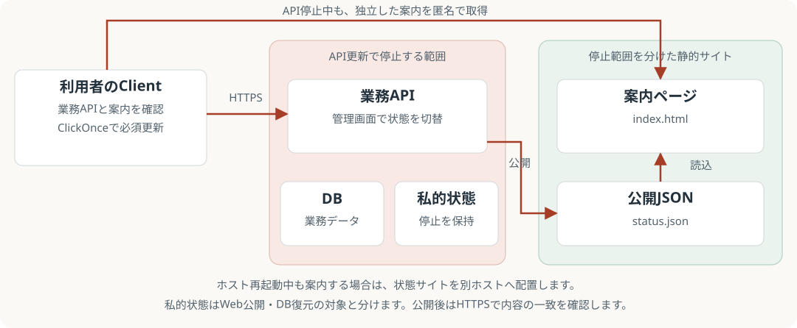
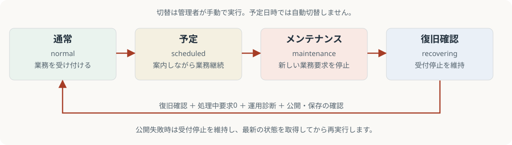
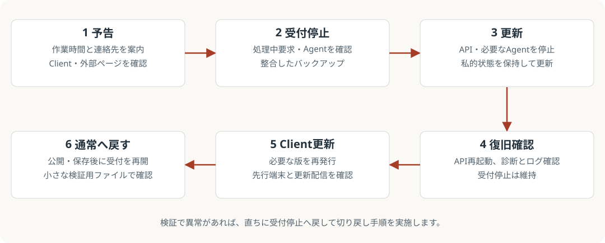

更新: 2026-09-06。以下の設定・API・配布物は実装済みです。パス、ホスト名、サービス名は環境の実値へ置き換えてください。作業対象のホストと停止範囲を確認してから進めてください。
01構成と停止範囲

| 要素 | 例 | 役割 |
|---|---|---|
| 業務API |
https://watashi.example.jp
|
認証・ファイル操作・状態切替 |
| ClickOnce配布 |
https://download.example.jp/Watashi/
|
必須更新マニフェストと配布物 |
| 独立した状態サイト |
https://status.example.jp/
|
index.html と status.json。API・DB・配布物に依存しない |
| 私的状態ファイル |
C:\ProgramData\Watashi\maintenance-state.json
|
Server再起動・DB復元後も受付停止を維持。Web公開しない |
| 公開JSON |
D:\Sites\WatashiStatus\status.json
|
Serverが原子的に置換し、HTTPSで一致を読み戻す |
状態サイトはAPIとは別のIISサイト・アプリケーションプールで配置し、API更新時に一緒に停止しない構成にします。API配下に仮想ディレクトリを追加するだけでは十分ではありません。ホスト再起動中も案内する場合は別ホストが必要です。別ホストではServerが書き込める共有上のパスを公開JSONに設定し、共有とNTFSの両方の権限を付与します。状態サイトは静的ファイルだけを匿名で読める構成にします。
既存構成の手順は IIS-HOSTING.md と README.md を参照してください。
02初回配置
- 状態サイト用DNS、信頼されるHTTPS証明書、IISのStatic Contentを用意します。APIの停止範囲と分離したサイトを作り、以下の配置先を物理パスに指定します。状態サイトのプールは「マネージドコードなし」で構いません。
- リポジトリのルートから配置します。まず
-WhatIfで対象を確認できます。
.\deploy\maintenance\Install-StatusAssets.ps1 -Destination 'D:\Sites\WatashiStatus' -WhatIf
.\deploy\maintenance\Install-StatusAssets.ps1 -Destination 'D:\Sites\WatashiStatus'
スクリプトは index.html、web.config、status.json だけをコピーし、既存の status.json は保持します。IIS・ACL・DNS・証明書は自動設定しません。スクリプト自体や私的ファイルをWebルートへ置かないでください。初期JSONは配置確認用です。Serverから状態を公開してから利用者へ案内します。
- Server実行アカウントに、私的ファイルと公開JSONの親ディレクトリへの変更権限（作成・置換・削除を含む）を付与します。私的ディレクトリは管理者とServerだけが読めるようにし、状態サイトには公開ディレクトリの読み取りだけを付与します。Serverアカウントから公開URLを信頼された証明書で取得できることを確認します。
- 本番Server設定へ追加します。同一ホストの複数環境では私的ファイルも環境ごとに分けます。
{
"Maintenance": {
"StateFilePath": "C:\\ProgramData\\Watashi\\maintenance-state.json",
"PublicStatusFilePath": "D:\\Sites\\WatashiStatus\\status.json",
"PublicStatusUrl": "https://status.example.jp/status.json"
}
}
StateFilePath が空なら上記ProgramData配下が既定です。公開先の2項目は両方空なら外部配信なし、使用する場合は絶対パスとHTTPS URLの両方が必要です。私的ファイルと公開ファイルは同じパスにできません。状態管理は単一Serverプロセスを前提とし、同じ私的ファイルを複数プロセスで共有する構成には対応しません。
- Serverを先に更新します。初回導入時の旧Serverには受付停止機能がないため、既存の作業停止・アクセス制限手順で停止して更新します。新Clientの2000件要求は旧Serverではエラーになります。新Serverは旧Clientの500件要求も受け付けます。
- 管理画面「運用状態」で状態を取得し、通常状態を公開します。公開確認成功を確認し、外部JSONがAPIと同じ状態・revision・時刻になっていることを確認します。
- Clientの
src/Watashi.Client/deployment.jsonに次の項目を追加し、署名を含む通常のClickOnce再発行を行います。
{
"maintenanceStatusUrl": "https://status.example.jp/status.json"
}
既存の serverUrl、updateManifestUrl 等は保持します。空文字なら独立サイトの確認を省略します。配布後のファイルは直接編集せず再発行してください。状態ページURLも事前に利用者へ案内します。ClickOnce自身のアプリ起動前の更新に失敗すると、WPFの案内画面まで到達できないためです。
03状態の切替

| 状態 | 表示・受付 |
|---|---|
normal
|
利用可能。受付を開く |
scheduled
|
予定を表示し、業務は継続。指定時刻の自動停止ではない |
maintenance
|
メンテナンス中。新しい業務APIを503で停止 |
recovering
|
復旧確認中。受付停止を維持 |
管理画面「運用状態」で案内文（最大500文字）と開始・終了予定（端末のローカル日時）を入力し、状態ボタンで切り替えます。日時は案内用で、終了予定を過ぎても自動解除しません。
-
GET /api/status: 匿名の状態取得。応答はno-store。 -
GET /api/admin/maintenance: Adminのみ。状態、処理中の業務要求数、公開確認済みrevision、公開エラーを取得。 -
PUT /api/admin/maintenance: Adminのみ。expectedRevision、state、message、任意のstartsAtUtc/expectedEndAtUtcを送信。日時はUTCのISO 8601形式。 - 古いrevisionは409。公開失敗の503でも受付停止が有効になっている場合があるため、状態を再取得してから修正・再実行します。
- 操作は
ADMIN_MAINTENANCE_UPDATEとして監査記録されます。
自動化用スクリプトも同じ認証済みAPIを使います。Adminとして取得した短時間有効なアクセストークンをセキュア入力します。履歴・ログ・文書へトークンを貼り付けないでください。
$maintenanceToken = Read-Host 'Admin access token' -AsSecureString
$maintenanceCurrent = Invoke-RestMethod 'https://watashi.example.jp/api/status'
.\deploy\maintenance\Publish-MaintenanceState.ps1 `
-ApiBaseUrl 'https://watashi.example.jp' -AccessToken $maintenanceToken `
-ExpectedRevision $maintenanceCurrent.revision -State maintenance `
-Message '更新作業中です。終了予定は18:00です。' `
-ExpectedEndAt '2026-09-05T18:00:00+09:00'
他の状態も同じ方法です。実行直前に状態を再取得してください。-WhatIf は送信前確認のみです。HTTPSリダイレクトは追従しません。公開JSONの直接編集は受付停止と連動しないため、通常の切替には使いません。
04更新当日の作業

-
scheduledで作業時間・連絡先を案内し、外部サイトとClient表示を確認します。 - 作業開始時に
maintenanceにします。APIの受付停止と外部の公開確認成功を確認してからサービス停止へ進みます。公開失敗はACL・証明書・到達性・キャッシュを修正して再取得・再実行します。 - 「処理中の業務要求」が0になるまで待ちます。受付済みのHTTP要求は完了できます。この数はAgentの独立処理やバックグラウンドの後片付けを含みません。Agent、転送、監査ログ再送、DB書き込みの状態も確認して停止します。
- バイナリ、本番設定、DB、証明書参照、サービス設定、監査ログ再送用データ、未完了転送データを復旧できる形で保持します。DBは backup.ps1 のオンラインバックアップ、または書き込み元を停止した整合したバックアップを使います。実行中のSQLiteファイルだけを単純コピーしません。
- API・必要なAgentを停止して更新します。私的状態ファイルと公開JSONを、配布物やDBと一緒に初期化しないでください。 再起動後も停止状態は保持されます。外部サイトを一緒に停止しません。
-
recoveringに切り替え、管理画面の運用診断、DB、共有の到達性、Agent、ログ、公開JSON、必須更新マニフェストを確認します。管理者のファイル操作も停止対象で、ファイル検証用のバイパスはありません。 - 必要なClientを再発行し、先行端末で更新、ログイン、案内表示を確認します。必須更新確認ができなければ通常起動できません。
-
normalに切り替えます。停止中から直接通常には戻せません。復旧確認中・処理中要求0・運用診断がUnhealthyでないことが必要です。公開先ありの場合はHTTPS読み戻しと私的保存の成功後に受付が開きます。 - 再開後に専用の検証場所で一覧・小さなファイルのアップロード／ダウンロードとハッシュを確認します。異常があれば直ちに
maintenanceに戻します。メンテナンス待機の転送だけが再開し、中止・対応待ち・競合待ちは勝手に再開しないことを確認します。
05切り戻し・障害時
- APIが起動しなくても独立サイトの最後の案内は残ります。停止中は管理APIで変更できないため、停止前に十分な案内を書きます。状態確認に失敗したClientは既知の待機を保持し、取得不能を通常状態と表示しません。
- 私的状態はDB復元から分離します。バックアップから古い通常状態へ戻して解除しないでください。私的ファイル破損時は受付停止で起動し、管理操作時に破損内容を退避します。読み取り・保存不可はACLやディスクを修復してください。
- バイナリとDBの互換性を確認して戻します。この機能を持たない旧Serverでは私的ファイルの停止が効かないため、ネットワーク／IISのアクセス制限を先に有効にし、検証後に解除します。
- DBは移行前の整合したものを使用し、転送の永続データ・一時データとの対応を確認します。期限切れの途中転送は失敗と表示され、利用者が「再試行」して先頭から再送します。競合は内容を確認して対応します。
- Clientを戻す場合も復旧コードを新しい発行バージョンで再発行します。マニフェストを手作業で古くしません。新しい待機状態を知らない旧Clientでキューを再開せず、キューを保持したまま対応版を配布してください。
06受入確認
- 状態サイトのルートとJSONを取得でき、APIプール停止中も表示できる。古いキャッシュが残らない。
- 匿名は状態取得のみ、管理PUTはAdminのみ。業務APIは503と
code: maintenanceを返す。認証、状態管理、最小限の診断、Agent内部経路は維持される。 - 予定／作業中／復旧確認／通常が表示される。長い日本語案内と小さい画面で確認する。
- 転送中に停止し、処理中要求の完了後に待機する。Client／Server再起動・DB復元で既知の停止を失わない。
- 公開先書き込み不可・HTTPS失敗・古いJSONでは公開成功と表示せず、解除を先行しない。
- 必須更新が必要／更新URLが到達不能な場合に待機を解除しない。
- 2000件超の実共有で初回・追加・再表示・ソート・絞り込み・スクロール・選択保持を確認する。SMBとネットワークを含む応答時間は環境ごとに実測する。
自動テストは状態遷移や境界条件を確認しますが、本番IIS・証明書・SMB・ClickOnceの受入確認を代替しません。